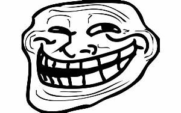
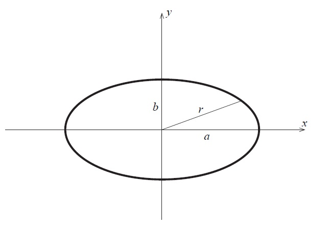

Quadratic equation paradox$x^2+x+1=0$ Let's rewrite our equation in two equivalent forms: $1)\quad x\cdot(x+1)=-1$ $2)\quad x+1=-x^2$ We get: $x\cdot(-x^2)=-1$ $x^3=1$ $x=1$ Triangle paradox
Derivation paradoxConsider any smooth vector function $\overrightarrow{r(t)}$ s.t. the vector and it's derivation are never equal to zero. We denote vector's length as $r=|\overrightarrow{r}|$ $r^2=\overrightarrow{r}\cdot\overrightarrow{r}$ $2r\cdot\dot{r}=2\overrightarrow{r}\cdot\dot{\overrightarrow{r}}$ $2|\overrightarrow{r}|\cdot \dot{|\overrightarrow{r}|}=2|\overrightarrow{r}|\cdot{|\dot{\overrightarrow{r}}|}\cdot \cos(\angle\overrightarrow{r}\dot{\overrightarrow{r}})$ We see that cosinus of the angle between $\overrightarrow{r}$ and it's derivation $\dot{\overrightarrow{r}}$ is equal to 1. So at any time $t$ vector $\overrightarrow{r}$ is parallel with it's derivation $\dot{\overrightarrow{r}}$. Nonsense! Where is the mistake? Ellipse paradoxConsider any ellipse  $x=a\cos\varphi,\quad y=b\sin\varphi$ We know that the area of ellipse is $S=\pi ab$. Let's try to derive the formula for this area: $\displaystyle\pi ab=S=\int\limits_0^{2\pi}\frac12r^2d\varphi=\int\limits_0^{2\pi}\frac12(x^2+y^2)d\varphi$ $\displaystyle=\int\limits_0^{2\pi}\frac12(a^2\cos^2\varphi+b^2\sin^2\varphi)d\varphi=\frac{\pi}{2}(a^2+b^2)$ So we see that $\displaystyle ab=\frac{a^2+b^2}{2}$ It means that $a=b$, i.e any ellipse is a circle. |